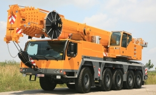
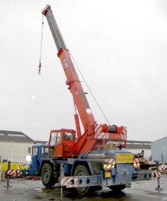
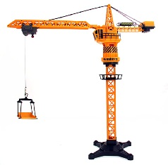
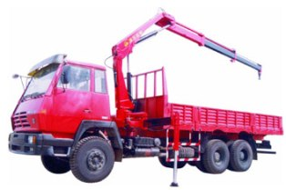
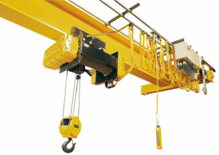

Cranes
A crane is a tower or derrick that is equipped with cables and pulleys that are used to lift and lower material. They are commonly used in the construction industry and in the manufacturing of heavy equipment.
- 
Mobile Cranes
The most basic type of crane consists of a steel truss or telescopic boom mounted on a mobile platform, which could be a rail, wheeled, or even on a cat truck. The boom is hinged at the bottom and can be either raised or lowered by cables or hydraulic cylinders.
- 
Tower Crane
The tower crane is a modern form of a balance crane. When fixed to the ground, tower cranes will often give the best combination of height and lifting capacity and are also used when constructing tall buildings.
- 
Truck Mounted Crane
Cranes mounted on a rubber tire truck will provide great mobility. Outriggers that extend vertically or horizontally are used to level and stabilize the crane during hoisting.
- 
Rough Terrain Crane
A crane that is mounted on an undercarriage with four rubber tires, designed for operations off road. The outriggers extend vertically and horizontally to level and stabilize the crane when hoisting.
- 
Overhead Crane
Also refered to as a suspended crane, this type is normally used in a factory, with some of them being able to lift very heavy loads. The hoist is set on a trolley which will move in one direction along one or two beams, which move at angles to that direction along elevated or ground level tracks, often mounted along the side of an assembly area.
 Facebook
Facebook Twitter
Twitter Gmail
Gmail RSS
RSS